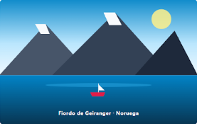

GUÍA DE EXPEDICIÓN · ESCANDINAVIA
Guía definitiva para recorrer los Fiordos Noruegos en 7 días
Por Sofía Valenzuela · 15 de Octubre, 2026 · 🕖 7 min de lectura · 💬 18 comentarios

Vista panorámica de las aguas cristalinas del fiordo al amanecer.
- Ruta principal: Bergen a Geiranger
- Temporada ideal: Mayo a Septiembre
- Transporte: Ferry + Coche
- Dificultad: Aventura Moderada
"Navegar entre paredes de roca de 1.000 blablabla"
Un santuario natural esculpido por el hielo
Los fiordos de Noruega son blablabla etc.
Itinerario recomendado día por día
Días 1-2: Bergen y Bryggen
Casco histórico de madera y funicular Floibanen.
Días 3-4: Næroyfjord
Navegación por el fiordo más estrecho del mundo.
Días 5-7: Geiranger y Alesund
Mirador Flydalsjuvet y arquitectura Art Nouveau.
Consejos logísticos antes de empacar
- La regla de las 3 capas: El clima nórdico puede cambiar en menos de 20 minutos.
- Pases de ferry anticipados: Reservar online con 2 semanas de margen ahorra dinero.
- Horas de luz: En verano cuentas con hasta 19 horas de luz diurna para explorar.